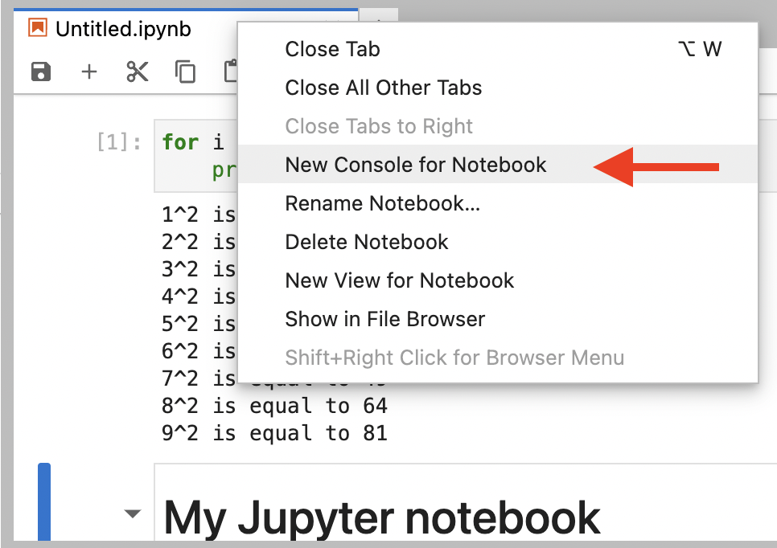

A Jupyter notebook is a document that contains narrative text, alongside runnable code
Jupyter notebooks have an .ipynb extension
An active cell in a Jupyter notebook can be in either command or edit mode:
Code cells contain executable code written in a specific programming language.
Each notebook is connected to a kernel, which is the backend engine in charge of running code in a notebook.
Code cells are executed using a notebook’s kernel.
You may run code cells in any order.
To run a code cell:
First make sure the cell is selected
Then, either click the little play button in the notebook toolbar, or
Hit Shift + Enter on your keyboard
When you are in command mode, you can use the following keyboard shortcuts to perform a variety of cell actions:
↑: move cell selection to above cell↓: move cell selection to below cellShift + ↑: extend selection to above cellShift + ↓: extend selection to below cellA: insert a new cell above current cellB: insert a new cell below current cellDD: delete current cellC: copy current cellX: cut current cellV: paste already cut or copied cell below current cellZ: undo last cell actionShift + Z: redo last undone cell actionCtrl + F: find match in notebookYou’re already familiar with the following shortcuts:
Ctrl + Enter: run current cellShift + Enter: run current cell and advanceConsoles in JupyterLab are interactive command lines connected to a kernel.
Auto-completion:
You can partially type the name of a variable, function, class, or any other known name in your Python session, and then press Tab to see the available options for auto-completion.
Contextual help:
To see a function’s docstring, press Shift + Tab while your cursor is anywhere inside a function’s name characters: